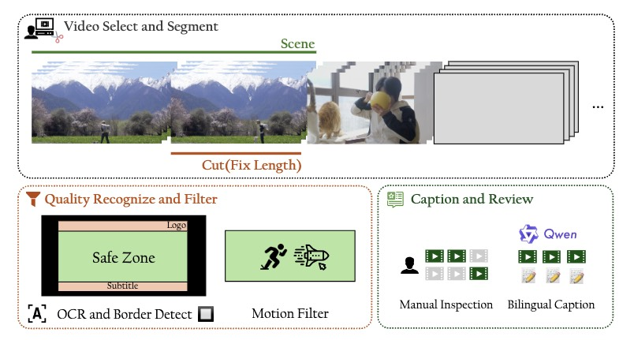
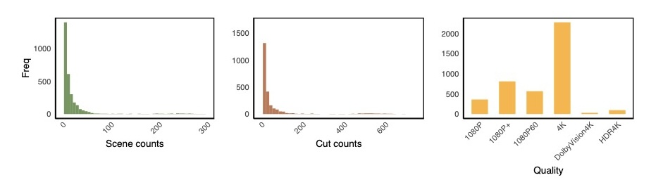
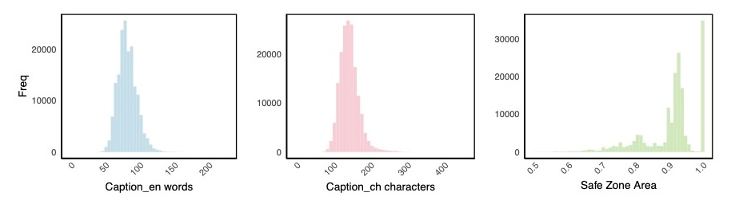

The recent surge in open-source text-to-video generation models has significantly energized the research community, yet their dependence on proprietary training datasets remains a key constraint. While existing open datasets like Koala-36M employ algorithmic filtering of web-scraped videos from early platforms, they still lack the quality required for fine-tuning advanced video generation models.
We present Tiger200K, a manually curated high visual quality video dataset sourced from User-Generated Content (UGC) platforms. By prioritizing visual fidelity and aesthetic quality, Tiger200K underscores the critical role of human expertise in data curation, and providing high-quality, temporally consistent video-text pairs for fine-tuning and optimizing video generation architectures through a simple but effective pipeline including shot boundary detection, OCR, border detecting, motion filter and fine bilingual caption.
The dataset will undergo ongoing expansion and be released as an open-source initiative to advance research and applications in video generative models.
Visualization
视频中，一位年轻男子坐在一个装饰有书架的室内环境中。他穿着黑色T恤，戴着眼镜，表情专注，似乎在认真地听别人说话或思考某件事情。背景中的书架上摆放着许多书籍，营造出一种学术和知识的氛围。男子的姿态和表情显示出他在进行某种对话或讨论。 The video features a person sitting in what appears to be a studio or interview setting. The individual is wearing a black shirt and glasses, and they seem to be engaged in a conversation or interview. The background includes bookshelves filled with books, suggesting an intellectual or academic environment. The lighting is warm and focused on the person, highlighting their facial expressions and gestures as they speak. The overall atmosphere is calm and professional.
这段视频展示了一个火山口内部的景象，火山口内充满了炽热的熔岩。熔岩呈现出明亮的橙红色，表面不断翻滚和涌动，散发出强烈的光芒。火山口边缘有部分熔岩溢出，形成了流动的熔岩流。火山口上方有大量的烟雾和蒸汽升起，整个场景显得非常壮观和震撼。背景是黑暗的火山岩壁，突显了熔岩的亮度和热度。 The video captures a dramatic scene of a volcanic eruption. Bright, fiery lava is seen flowing and bubbling intensely from the volcano's crater, illuminating the surrounding area with its intense orange and red glow. Thick plumes of smoke rise into the air, adding to the sense of power and intensity. The lava appears to be moving dynamically, creating a mesmerizing display of nature's raw energy. The overall atmosphere is one of awe and danger, highlighting the unpredictable and powerful forces at play during such an event.
视频中展示了两只猫，一只成年猫和一只小猫，它们坐在一块编织的垫子上。成年猫是橙白相间的，而小猫则是纯白色的。成年猫低头看着小猫，似乎在与它互动或照顾它。背景模糊，但可以看出是在户外，可能是一个市场或街道的场景。整体氛围温馨，展现了猫咪之间的亲密关系。 The video shows two cats, an adult and a kitten, sitting on a small woven mat. The adult cat is orange and white, while the kitten is mostly white with some orange patches. They appear to be in a relaxed setting, possibly outdoors, as there is a metal container nearby and a blurred background that suggests an open area. The adult cat seems to be grooming itself, while the kitten looks up at it, possibly observing or interacting with the adult. The scene conveys a sense of calm and companionship between the two cats.
视频展示了一架红色的水上飞机在冰川上空飞行的场景。背景是壮丽的冰川和雪山，冰川呈现出蓝色和白色的层次，水面平静如镜，反射出周围的景色。飞机从画面左侧飞向右侧，逐渐远离镜头，显示出广阔的自然景观。整个画面给人一种宁静而壮观的感觉。 The video shows a red seaplane flying low over a large glacier in a serene, icy landscape. The glacier is surrounded by calm waters and rugged mountains in the background. The plane appears to be gliding smoothly, providing a stunning aerial view of the natural beauty of the area. The scene captures the contrast between the vibrant red of the plane and the cool blues and whites of the ice and water.
视频展示了一位穿着粉色服装的女性在花园中跳舞。她身穿一件带有白色装饰的粉色连衣裙，头戴粉色发饰，脚穿银色高跟鞋。她的舞蹈动作优雅流畅，手臂和身体随着音乐节奏摆动。背景是一个充满绿色植物和粉色花朵的美丽花园，环境宁静而自然，给人一种轻松愉快的感觉。 The video features a person dressed in a pink and white outfit, performing a graceful dance in a garden setting. The dancer is adorned with floral accessories and has long, flowing hair. The background includes blooming pink flowers and lush greenery, creating a serene and picturesque environment. The dancer's movements are fluid and expressive, adding to the overall beauty of the scene.
视频展示了一片宁静的森林景象，镜头从一棵树干开始，逐渐向右移动，展现出一片水域和周围的树木。水面平静，反射着天空和周围的树木，显得格外清澈。树木高大茂密，枝叶繁茂，阳光透过树叶洒在地面上，形成斑驳的光影效果。水域周围有一些枯木和倒下的树枝，增加了自然的野趣。整体画面给人一种宁静、自然的感觉。 The video captures a serene forest scene with a river flowing through it. The camera pans slowly, revealing tall trees with lush green foliage and some bare branches. The water reflects the surrounding trees, creating a mirror-like effect. Sunlight filters through the leaves, casting dappled shadows on the ground and water. The overall atmosphere is peaceful and natural, with the gentle flow of the river adding to the tranquil ambiance.
Pipeline

The pipeline of data construction.
First, the selected video will segment by scene and further subdivided into cuts of fix length.
Then, methods such as OCR, border detection, and optical flow estimation are used for quality filtering.
Finally, manual review was carried out and bilingual fine-grained caption was performed using VLM.
Statistical results of video level

Videos with 4K and 1080P resolutions each account for approximately half. The vast majority of videos can only extract a small number of clips due to their short duration and strict filtering.
Statistical results of annotation level

The length of bilingual annotations is mostly controlled within a reasonable range. The retention area of safe zone for the vast majority of clips is also above 0.85.